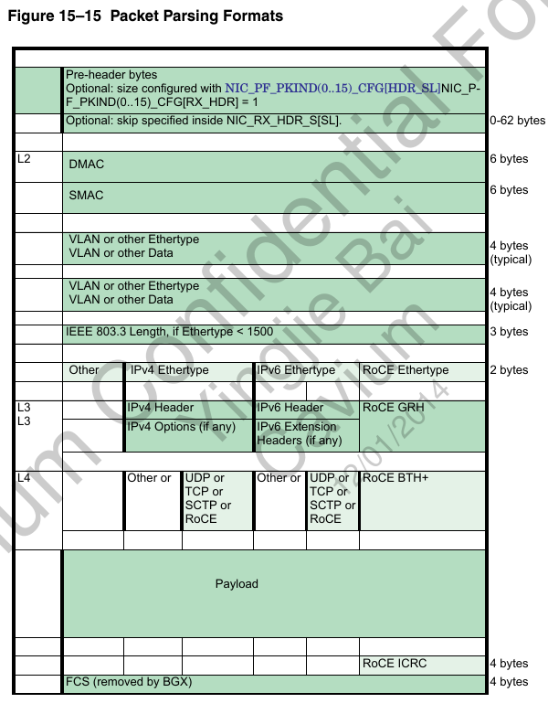
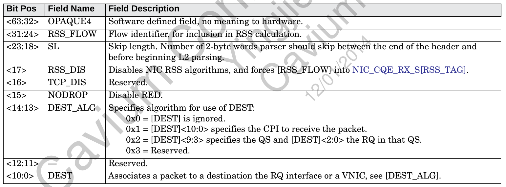

1. 四个运行级别
--怎么理解secure模式?????
好像任何地址都可以配置为secure和unsecure的, secure
2. 地址空间
有三类:
- 虚拟地址(VA)
- 中间物理地址(IPA)
- 物理地址(PA)
同一时刻只能有其中一种地址存在在数据和指令cache中.
下图是物理地址的属性, bit47决定能不能cache. 这和octeon一样
2.1. 两级地址翻译

两级查找: stage1(VA-->IPA)和stage2(IPA-->PA)
- uTLB: 缓存从VA到PA的结果
- mTLB: 缓存stage1 and stage2
- walker cache: 缓存the first three levels of the page table
2.2. hardware walker
三级单位, 包含关系
Page(level 2) > Block(2MB)(level 1) > Granule(64k)(level 0)
Hardware-translation lookaside buffers and a page-table walkers deal only with granules or blocks
2.3. 49bit VA, 48bit PA

3. thunder overview

3.1. cache
L2cache保证CPUs, DMA的一致性.
3.2. SMMU
SMMU用来把PCIe设备的虚拟态transaction地址转为系统物理地址. IOMMU? ----> 只有有DMA的设备才用这个.
对thunder来说, 每个内置的block都是pcie设备没错, 但只是看起来是. 而且, 他们bar地址是固定的.
从CPU看起来, 每个设备的寄存器地址也是固定的.这个和octeon一样.
从设备发起的传输是DMA
而从CPU发起的的传输不是DMA, 比如读VNIC的寄存器.
因为用户态进程不会搞DMA的事情, 所以IOMMU几乎和内核自己用的空间是一样的.
在虚拟化的时候, 这个特点就非常重要, 一个虚拟机操作的设备要看到和这个虚拟机一样的地址空间.
SMMU保护的是内存不能被没有权利看到它的设备访问.
3.2.1. thunder SMMU
- 4个SMMU, 每个对应一个ECAM
- 设备发起的到NCB的read/write transaction有个49位的地址和16位的识别码(用来标识是哪个PCI设备), 这个49位的地址就是每个设备"隔离"的地址空间, 通过SMMU查IOTLB(1024个entry), 命中了就好说了, 没命中的话, SMMU会walk整个TABLE去查
- SMMU stream ID是个16bit的ID
- 非ARI设备这16bit就是bus:dev:func
- 是ARI设备, 是PF, 则是bus:func
- 是ARI设备, 是VF, 则是bus:func+VF号+1
- RAD控制器的没看懂
- 外部设备就是16bit的requeser ID

- 可以disable
- 如果经过SMMU转换后, 一个DMA的写地址落在GIC的中断delivery寄存器, 这个就是MSI
用下面的格式来识别发中断的设备
- 有下面几类的寄存器
- ECAM Registers
- PCC PF Registers
- PCC VF Registers
- PCC Bridge Registers
3.3. PCC
PCI Common Configuration unit
PCI Enhanced access mechanism(ECAM)

- 有内置的多个桥: PCI On-Chip Common Bridges (PCCBR)
- PCCPF/PCCVF就是指具体的device了
- 支持MSI-X
- SR-IOV相关的寄存器只在PF里面有
- ARI技术: 在PCIE3.0里出现. 见PCIe ARI
在以前一个pci设备是bus(8bit):dev(5bit):func(3bit)来识别的, 一共16位, 所以我们经常说一共有256个bus, 32个dev, 8个func
但是, ARI技术的出现, 让dev和func的概念同一叫func, 这样一来, 一个bus下面只有一个dev, 但这个dev可以有256个func
3.4. NCB
- each NCBO has PCI configuration ECAM discovery through the PCC
- each NCBI has address translation routing through the SMMU
- 4个ECAM
3.5. RST
内部有个ROM, 可以从spi或eMMC load固件
但对image的格式, 每个地址区域存的东西都有要求
启动流程: TBL1FW(由ROM load到L2)-->BL2FW-->BL3FW-->UEFI
3.6. GIC
- 支持多cpu node
- 支持deliver to VM
3.7. NIC
- 一个NIC有128个VF, 其中127个就像单独的pcie设备(SR-IOV), 地址转换由SMMU完成
- QS, queue set, 和VF一对一, QS和VNIC可以自由组合, QS是物理上的, VNIC是逻辑上的
QS到VNIC由NIC_PF_QS(0..127)_CFG[VNIC]控制
- CQ, SQ, RBDR在内存里
- CQ, completion queue, VNIC加entry(CQE, 512byte), core减entry. 每个entry是收包完成或发包完成
超过水线可以发中断
核处理完一个CQE, 要写NIC_QS(0..127)_CQ(0..7)_DOOR来释放CQE
3.7.1. 收包的CQE格式
3.7.2. 收包CQE有几种形态
- 小包直接放在CQE里面

- copy报文头到CQE
- 指示放到RB

3.7.3. SQ, send queue
核发包的时候add一个SQE, 再发doorbell, 然后VNIC把这个SQE发出去, 并remove这个entry.
SQ必须对应一个CQ(可以多对一), NIC在发包完成时自动创建一个CQE?
核发包是要填SQE到SQ, 然后写NIC_QS(0..127)_SQ(0..7)_DOOR发包, VNIC完成后产生一个CQE到CQ
- 发送命令字

- TCP 分片: If NIC_SEND_HDR_S[TSO] is set
- 发包后的动作? 由VNIC来做?

3.7.4. TL4:拥塞通告：IEEE 802.1Qau
拥塞通告属于流量管理，通过指示速率限制器来调整引起拥塞的流量，可将拥塞限制到网络边缘。IEEE 802.1Qau工作组接受了思科的拥塞通告提议，后者定义了一种架构来积极管理流量，以避免流量拥塞。
3.7.5. 报文格式

- RBDR, receive-buffer descriptor ring, 是个描述符的ring, 表示空闲的收报文buffer.
RBDR里面的每项都是个buffer指针, cache line对齐, 大小是NIC_QS(0..127)_RBDR(0..1)_CFG[LINES]
RBDR超过水线也可以发中断 - RQ, receive queue, VNIC internal structure, 一个RQ也对应到一个CQ(可多对一), VNIC收包的时候会创建CQE. 一个RQ和一个或两个RBDR关联(可多对一).
The receive queues (RQ) describe where receive traffic is to be placed.
3.7.6. 收报文流程
报文从物理的interface进来, 这个物理口对应一个port号 BGX(0..1)_PORT(0..3)_CH(0..15) 或 TNS_PORT(0..1)_CH(0..127)
从TNS来的报文可能加个内部头NIC_RX_HDR_S
下一步是区分pkind, 一共16种, NIC_PF_PKIND(0..15)_CFG
典型应用是分三种pkind, one for all TNS interfaces, one for all BGX interfaces, and one for all BGX interfaces with PTP timestamps.
然后决定报文的NIC_PF_CHAN(0..255)_RX_CFG, 这个CFG里面有个base和偏移, 决定了报文到哪个NIC_PF_CPI(0..2047)_CFG
CPI是channel parse index
到了NIC_PF_CPI(0..2047)_CFG里面, 就决定了到那个VNIC, 同时决定了和VNIC对应的RSS和RSSI表的BASE
- 问题1: 所以从上面过程来看, 关键是pkind和chanel?
--TNS可以指示到NIC_PF_CPI(0..2047)_CFG的选择 --必须用TNS? - 问题2: NIC_PF_CPI(0..2047)_CFG已经决定了VNIC, 为什么后面NIC_PF_RSSI(0..4095)_RQ还能决定到哪个RQ? --冲突了?
--调查哪里用了NIC_PF_CPI(0..2047)_CFG
RSS是什么? receive-side scaling
NIC_PF_CPI(0..2047)_CFG里面
- VNIC: 哪个VNIC收, 同时对应了NIC_VNIC(0..127)_RSS_CFG, 它可以做HASH, 根据IP TCP UDP等可配, 最终决定到哪个RQ?
- RSSI_BASE: 在RSSI中的基址
NIC_PF_RSSI(0..4095)_RQ: 通过HASH来决定报文到那个QS(0..127), 和一个QS里面的那个IDX(0..7)
3.7.7. 收报文格式解析: 对报文的前254个字节都可以解析?

- mailbox
用于在VF和PF之间通信(64bit words) - TNS
TNS到NIC的报文可以加
 - PF和VF的pcie接口

3.8. SLI

- 由core发起的请求, S2M: SLI to Mac
- 配置空间请求
- 由target发起的请求, M2S; 包括MSI
- thunder做为EP时, host方也能访问thunder内部寄存器, 通过SLI窗口寄存器, 这和octeon一样.